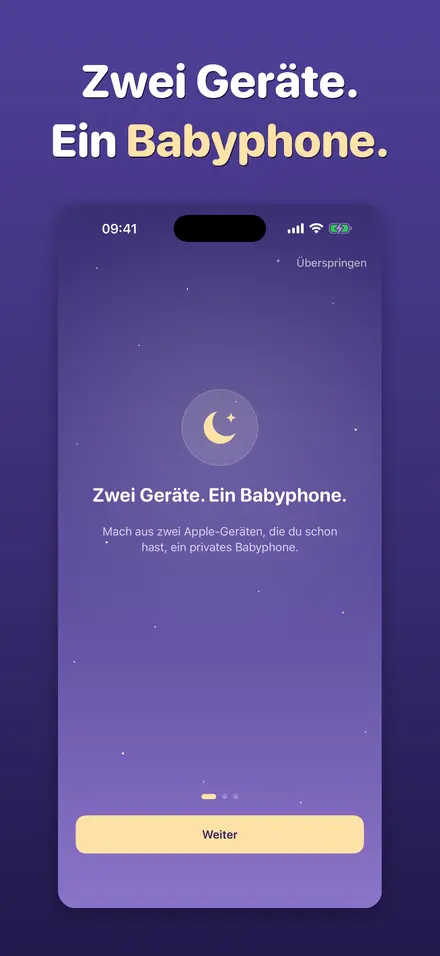

Vídeo e som ao vivo
Veja e ouça seu bebê em tempo real na unidade dos pais, no Wi-Fi e fora de casa com dados móveis.
O LaLeLu transforma seu iPhone, iPad e Mac em uma babá eletrônica com câmera e privacidade: vídeo e som ao vivo, aviso de choro e função de falar com o bebê. Criptografia de ponta a ponta, nada é gravado.
Para iPhone, iPad e Mac. São necessários dois aparelhos Apple.

Um aparelho fica no quarto do bebê como unidade do bebê, o outro vira a unidade dos pais. Combine iPhone, iPad e Mac como quiser.
Veja e ouça seu bebê em tempo real na unidade dos pais, no Wi-Fi e fora de casa com dados móveis.
A detecção de sons acontece inteiramente na unidade do bebê. Ao ouvir choro ou tosse, você recebe uma notificação, mesmo com a tela bloqueada.
Fale com seu bebê tocando num botão, sem sair do lugar.
Ruído branco, rosa e marrom. O timer desliga os sons quando o bebê pega no sono.
O modo noturno escuro poupa os olhos e uma luz suave ajuda no escuro.
Veja quando houve barulho no quarto. O histórico fica só no seu aparelho.


Muitos apps de babá eletrônica pedem assinatura, uma compra por aparelho ou uma conta própria. O LaLeLu não.
| Critério | LaLeLu | Apps de babá eletrônica típicos |
|---|---|---|
| Preço | Grátis, para todos os aparelhos | muitas vezes assinatura ou compra por plataforma |
| Conta / cadastro | Nenhuma, só o seu acesso ao iCloud já existente para o pareamento | muitas vezes exigem conta própria |
| Anúncios e rastreamento | Sem anúncios, sem SDKs de rastreamento | às vezes anúncios ou análises |
| Vídeo e som | Criptografia de ponta a ponta, nunca gravados | às vezes armazenados ou processados em servidores na nuvem |
| Detecção de choro | No aparelho, sem enviar áudio para a nuvem | às vezes só um limite de volume ou análise na nuvem |
| Aparelhos | iPhone, iPad e Mac, combine à vontade | muitas vezes uma única plataforma |
A comparação descreve diferenças gerais do mercado, não um app específico.
Vídeo e som vão direto entre os seus aparelhos (WebRTC, DTLS-SRTP). Só aparelhos que você mesmo pareou veem a imagem.
Vídeo e som não ficam guardados em nenhum servidor nem de forma permanente no app.
A análise de sons é feita localmente com o Apple SoundAnalysis. Nenhum áudio é enviado para nós.
Para ser transparente: o LaLeLu usa a Apple (iCloud, push) e a Cloudflare para intermediar a conexão e o aviso. O que é armazenado, e por quanto tempo, está descrito por completo na política de privacidade (em inglês).
Sim. O LaLeLu é um app de babá eletrônica grátis, sem assinatura, sem anúncios e sem recursos bloqueados. Não existe período de teste que acaba.
Não. O LaLeLu não tem conta própria nem cadastro. Para parear seus dois aparelhos uma vez, o app usa o acesso ao iCloud que você já tem no iPhone, iPad ou Mac.
Não. Vídeo e som são enviados ao vivo, com criptografia de ponta a ponta (WebRTC, DTLS-SRTP), direto entre os seus aparelhos e não são gravados em nenhum servidor nem no app. Se uma conexão direta não for possível, o fluxo, ainda criptografado, passa por um relay da Cloudflare que não consegue descriptografá-lo.
Dois aparelhos Apple: um fica no quarto como unidade do bebê (iPhone, iPad ou Mac com câmera e microfone), o outro é a unidade dos pais (iPhone ou iPad). Um iPhone antigo já basta como unidade do bebê. Android não é compatível.
Sim. O app para Mac funciona como unidade do bebê, usando a câmera integrada ou uma câmera conectada e o microfone. Ele fica no quarto do bebê enquanto o seu iPhone é a unidade dos pais.
Sim. Conecta no mesmo Wi-Fi e também por dados móveis ou outras redes. Os dois aparelhos precisam de internet. Em casa a conexão costuma levar de um a dois segundos, fora de casa muitas vezes alguns segundos.
A detecção de sons roda inteiramente na unidade do bebê, com o Apple SoundAnalysis. Nenhum áudio vai para a nuvem para análise e nada é coletado para treinamento. Quando o app ouve choro ou tosse, você recebe uma notificação.
Sim. O aviso chega como notificação push mesmo com a tela bloqueada. Permita as notificações do LaLeLu nos ajustes do iPhone.
No aparelho do bebê você cria um link de pareamento ou QR code e o abre ou escaneia no aparelho dos pais. Leva poucos minutos. O link é a chave do pareamento, então compartilhe só com pessoas de confiança.
Sim. Várias unidades dos pais podem ficar conectadas ao mesmo tempo, para que os dois responsáveis fiquem informados, mesmo com Apple IDs diferentes.
Baixe o LaLeLu grátis e monte sua babá eletrônica privada em poucos minutos.
Baixe grátis na App Store